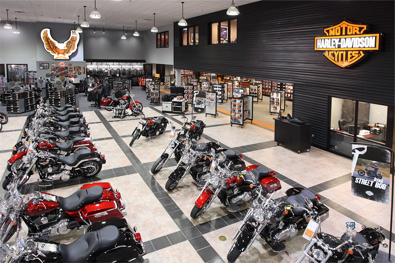

Company Profile
Moto Rapida is an American motorcycle manufacturer, founded in California, San Diego in 1903.Its been a tough journey for the company. The company has survived numerous ownership arrangements, subsidiary arrangements .The world's fifth largest motorcycle manufacturer and an iconic brand widely known for its loyal with owner clubs and events worldwide as well as a company sponsored brand-focused museum. Noted for a style of customization that gave rise to the chopper motorcycle style, Moto Rapida traditionally marketed heavyweight, air-cooled cruiser motorcycles with engine displacements greater than 700 cc — and has broadened its offerings to include its more contemporary VRSC (2001) and middle-weight Street platforms. Moto Rapida manufactures its motorcycles at factories in San Diego York, Pennsylvania; Milwaukee, Wisconsin; Kansas City, Missouri; Manaus, Brazil; and Bawl, India and markets its products worldwide.
Our Mission
Our mission is to provide every customer with the best retail experience they’ve ever had and to bring together new friends and build lifetime relationships through the sport of motorcycling by providing motorcycles and public an expanding line of motorcycles and branded products and service in selected market segments.
Our Vision
Our vision is our corporate conscience and it helps us to eliminate short term thinking, such as "cashing in" on the intense demand for our motorcycles by giving quantity precedence over quality to save a few dollars per unit. It also encourages every employee in our organization to be acutely aware of his or her role in satisfying our stakeholders.